Author: Yuchen ZhangCS280A Fall 2025Topics: Diffusion + Flow Matching
This project contains two parts:
Part A explores a pretrained diffusion model, DeepFloyd IF, and experimented with sampling loops, inpainting, and optical illusions.
Part B trains a generative model from scratch on the MNIST dataset using UNets and flow matching, also played with time/class conditioning to improve sampling quality.
In Part A, I explore the fundamental mechanics of diffusion models by manually implementing the sampling loops
rather than relying on a "black box" pipeline. I start by visualizing the forward process, taking a clean
test image (the Campanile) and gradually corrupting it with Gaussian noise. Then, I implement the reverse process,
demonstrating how a model can recover the image through iterative denoising. Finally, I apply these
concepts to creative tasks, including inpainting (restoring missing parts of an image),
Visual Anagrams (optical illusions), and Hybrid Images.
A0. Setup & Text Embeddings
For this project, I utilized the DeepFloyd IF diffusion pipeline, a pixel-based diffusion model.
DeepFloyd operates in a cascaded fashion: Stage I generates a base 64×64 image, which can then be passed to
Stage II for super-resolution upscaling to 256×256.
The model is conditioned on text, but it does not process raw strings directly. Instead, text prompts must be encoded into
high-dimensional vectors (embeddings) using a T5 encoder. Since this encoding process is computationally heavy,
I pre-computed the embeddings for a set of specific prompts. This allowed me to iterate quickly on the diffusion
mechanics (like noise levels and guidance scales) without re-running the text encoder every time.
To ensure scientific reproducibility, I fixed the random seed to 404 for all experiments. This guarantees that
any visual differences observed in later sections are due to algorithmic changes (e.g., comparing random sampling vs. CFG)
rather than the inherent randomness of the noise generation.
Selected Prompts: I chose three distinct prompts to test the model's ability to handle different subjects and styles:
"a UC Berkeley oski" (Artistic/Landscape)
"a man fighting with a tree" (Portrait/Realistic)
"a frozen university campus" (Lighting/Texture)
Inference Parameters: I primarily utilized num_inference_steps = 20 for sampling.
This provides a strong balance between generation speed and visual fidelity. Then I also experimented with num_inference_steps = 5, 10, 50 to see the effect of inference steps.
Observation: Even at the coarse Stage I resolution (64x64), the model successfully captures the semantic core
of the prompts. The "a man fighting with a tree" and "a frozen university campus" both show good visual of the scene, capturing most of the semantic elements. For example, a university campus and snow in the later prompt. However, the "a UC Berkeley oski" is the least precise visual, none of them correctly displayed the true oski figure. This indicates the model cannot create concepts it never seen before.
Also the number of inference steps play a vital role. The low steps often produced course and unprecise images, whereas the photos become more precise as the steps increase. For example, in the UC Berkeley oski case, the low steps had completely lost, whereas the high steps showed a university building implying that it realized the comcept of UC Berkeley.
a UC Berkeley oski — Stage I (64×64), 20 steps
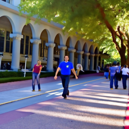
a UC Berkeley oski — Stage II (256×256), 20 stepsa man fighting with a tree — Stage I (64×64), 20 stepsa man fighting with a tree — Stage II (256×256), 20 stepsa frozen university campus — Stage I (64×64), 20 stepsa frozen university campus — Stage II (256×256), 20 steps
5 inference steps
a UC Berkeley oski — Stage I (64×64), 5 steps
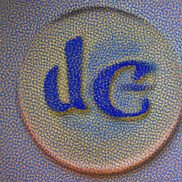
a UC Berkeley oski — Stage II (256×256), 5 stepsa man fighting with a tree — Stage I (64×64), 5 steps
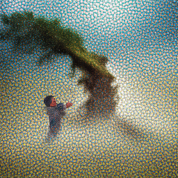
a man fighting with a tree — Stage II (256×256), 5 stepsa frozen university campus — Stage I (64×64), 5 steps
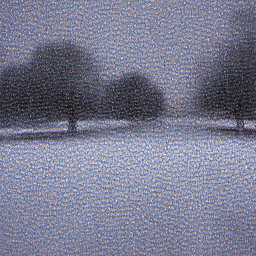
a frozen university campus — Stage II (256×256), 5 steps
10 inference steps
a UC Berkeley oski — Stage I (64×64), 10 steps
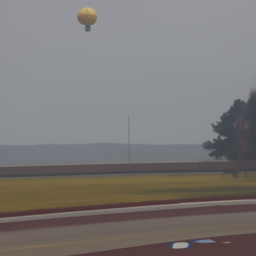
a UC Berkeley oski — Stage II (256×256), 10 stepsa man fighting with a tree — Stage I (64×64), 10 steps
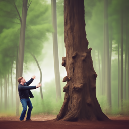
a man fighting with a tree — Stage II (256×256), 10 stepsa frozen university campus — Stage I (64×64), 10 steps
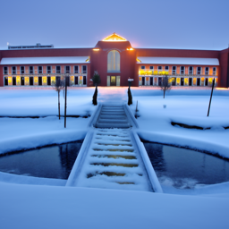
a frozen university campus — Stage II (256×256), 10 steps
50 inference steps
a UC Berkeley oski — Stage I (64×64), 50 stepsa UC Berkeley oski — Stage II (256×256), 50 stepsa man fighting with a tree — Stage I (64×64), 50 steps
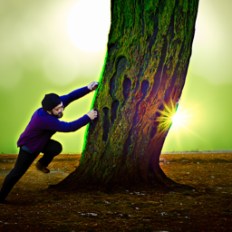
a man fighting with a tree — Stage II (256×256), 50 stepsa frozen university campus — Stage I (64×64), 50 steps
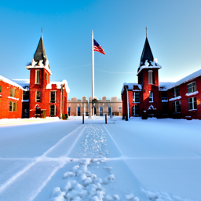
a frozen university campus — Stage II (256×256), 50 steps
A1. Sampling Loops
A1.1 Implementing the Forward Process
The forward process produces a noisy image xt from a clean image
x0 by adding a Gaussian noise according to the noise schedule.
Concretely, the equation at timestep t:
xt = √ᾱt · x0 + √(1 − ᾱt) · ε, where ε ~ N(0, I).
Earlier timesteps have ᾱt close to 1, so the result is similar to the original image; later timesteps have
ᾱt near 0, so the result becomes nearly pure noise. I applied the
forward process to the provided Campanile image at 3 timesteps
(t = 250, 500, 750), where the result become more and more like pur noise.
Clean Campanile (t=0).
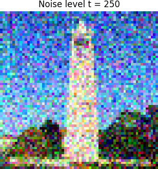
Noisy Campanile at t=250.
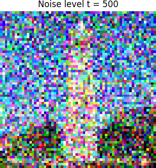
Noisy Campanile at t=500.
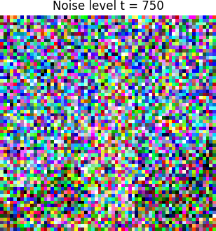
Noisy Campanile at t=750.
A1.2 Classical Denoising (Gaussian Blur)
I used a classical Gaussian blur filter as a baseline denoising method for comparison. Gaussian blur works well for
low levels of noise but it cannot distinguish noise from fine image details. As the noise level increases, gaussian blur
degrades rapidly as shown below.
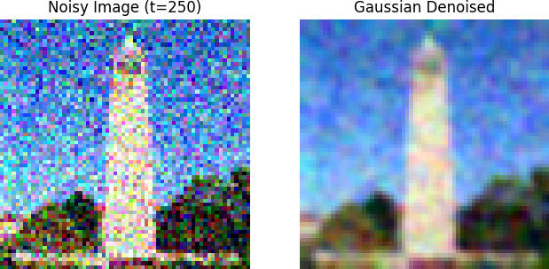
Gaussian blur at t=250.
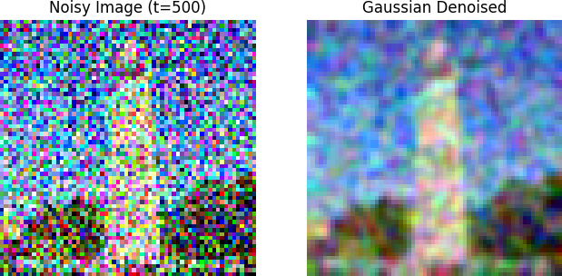
Gaussian blur at t=500.
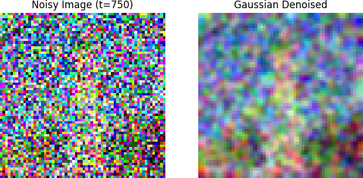
Gaussian blur at t=750.
Next, I use the pretrained DeepFloyd Stage-I UNet to perform a single denoising step. First I used the forward function to add noise to the original image, then I passed the noisy image and the corresponding timestep t to the UNet to predict the noise ε̂. Finally, I computed the denoised image x̂0 using the predicted noise:
x̂0 = (xt − √(1 − ᾱt) · ε̂) / √ᾱt.
This effectively “subtracts” the predicted noise from xt to recover an estimate of the clean image.
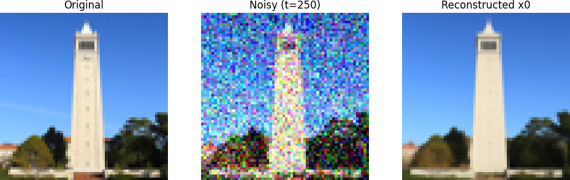
One-step denoise at t=250
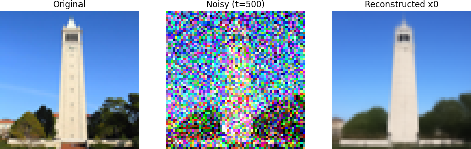
One-step denoise at t=500
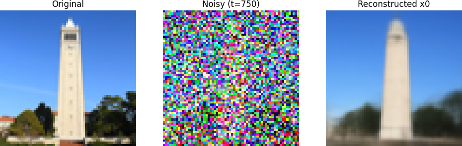
One-step denoise at t=750
1.4 Iterative Denoising
As demonstrated in the previous section, attempting to recover a clean image from high noise levels in a single step is an ill-posed problem, resulting in blurry, averaged outputs. Diffusion models overcome this by removing noise iteratively.
However, running the full diffusion process (e.g., 1000 steps) is computationally expensive. To speed this up, I implemented Strided Sampling. I created a schedule of timesteps starting at t=990 and stepping down by 30 until reaching 0. This allows us to skip steps while still adhering to the diffusion dynamics.
At each step, we move from a noisier timestep t to a less noisy timestep t'. The update rule involves estimating the clean image, then re-noising it slightly to match the target noise variance of t'. This can be thought of as a weighted interpolation:
xt' = (Interpolation of x0) + (Interpolation of xt) + (Random Variance)
The Denoising Process
I started with the Campanile image noised to index 10 (approx t=690) and ran the iterative denoiser. Below, I visualize the process by displaying the image at every 5th step of the loop. Notice how the structure gradually emerges from the chaos.
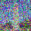
t = 690
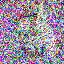
t = 540
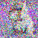
t = 390
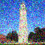
t = 240t = 90
Final Comparison
Here is the final result of the iterative method compared against the baseline methods. The iterative approach recovers fine details (like the brick texture and scaffolding) that the One-Step method blurs out and Gaussian Blur destroys completely.
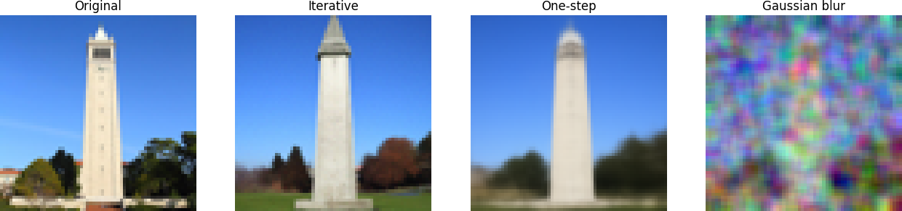
Final Iterative Result Comparison
1.5 Diffusion Model Sampling
The iterative_denoise function is not limited to restoring noisy images; it can also act as a generative tool.
By setting i_start = 0 and passing pure Gaussian noise as the input, the model hallucinates a completely new image from scratch.
I used this method to generate 5 random samples based on the prompt "a high quality photo".
The results below demonstrate the model's ability to form coherent structures (objects, landscapes, etc.) from pure randomness,
although the quality is limited without the use of Classifier-Free Guidance (which is explored in the next section).
Sample 1Sample 2Sample 3Sample 4Sample 5
1.6 Classifier-Free Guidance (CFG)
As observed in the previous section, generating images purely from the prior often results in incoherent or "nonsensical" outputs.
To significantly improve image quality, I implemented Classifier-Free Guidance (CFG).
CFG works by computing two noise estimates at every timestep:
Conditional noise estimate ($\epsilon_c$): Conditioned on the text prompt (e.g., "a high quality photo").
Unconditional noise estimate ($\epsilon_u$): Conditioned on a null prompt (an empty string "").
The final noise estimate is computed by extrapolating the difference between these two vectors:
Here, $\gamma$ is the guidance scale. When $\gamma > 1$, the model pushes the generation away from the generic/average image
and towards the specific text prompt.
I updated the iterative sampling loop to include CFG (using a scale of $\gamma = 7$). Below are 5 samples generated
using the prompt "a high quality photo". Compared to the non-guided samples in section 1.5, these are significantly
sharper, more coherent, and realistic.
In this section, I implemented the SDEdit algorithm. The core idea is simple but powerful: we take a real image, add a specific amount of noise to it (jumping to timestep t), and then run the iterative denoising process to clear it up.
The noise level determines the "creativity" of the edit.
Low noise (e.g., i_start=1): The model makes minor edits, staying very close to the original image.
High noise (e.g., i_start=20): The original structure is heavily corrupted, forcing the model to "hallucinate" new details to project it back onto the natural image manifold.
1.7.0 SDEdit: Noise Levels
Below, I ran SDEdit on the Campanile and two other test images of my own with varying starting noise indices [1, 3, 5, 7, 10, 20].
The image becomes more abstract and distinct from the original as the noise level increases.
I used the prompt "a high quality photo" and null as the unconditional prompt.
Test Image 1: Campanile
Originali=1i=3i=5i=7i=10i=20
Test Image 2: Labubu
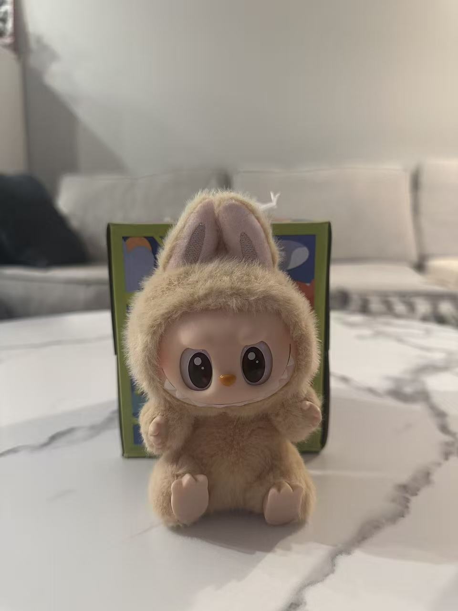Originali=1i=3i=5i=7i=10i=20
Test Image 3: Toy
Originali=1i=3i=5i=7i=10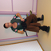i=20
1.7.1 Editing Hand-Drawn & Web Images
This procedure works exceptionally well for projecting non-realistic images (like sketches) onto the natural image manifold.
I took a web image (Tiger) and 2 hand-drawn sketches (Car and Cat) and ran them through the same pipeline.
Web Image: Tiger
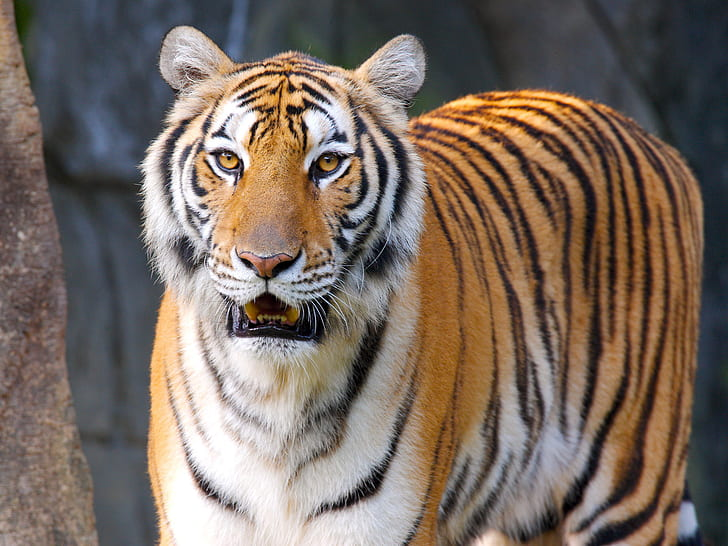Originali=1i=3i=5i=7i=10i=20
Hand-Drawn: Car Sketch
Originali=1i=3i=5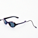i=7i=10i=20
Hand-Drawn: Cat Sketch
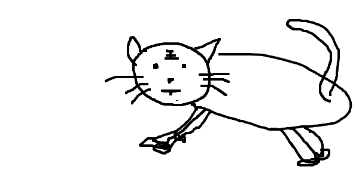Originali=1i=3i=5i=7i=10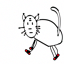i=20
1.7.2 Inpainting
I implemented the RePaint algorithm to perform inpainting. By using a binary mask, we can force the model to keep the original pixels in the unmasked areas (mask=0) while generating new content in the masked areas (mask=1).
This is achieved by modifying the sampling loop: at every step, after the model predicts $x_{t-1}$, we replace the unmasked pixels with the noisy original image at that same timestep.
I experimented with inpainting on the Campanile image as well as two custom images of my own. The results below show the original image, the mask used for inpainting, and the final inpainted result. For my own images, I'm showing the mask using a red box for clarity, and inpainting the image by generate a new image where the mask is at the center of the patch. This is because the model will only generate contents at the center of an image, so cropping the mask to the center allows for better inpainting results.
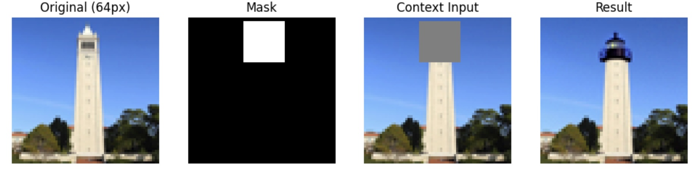campanile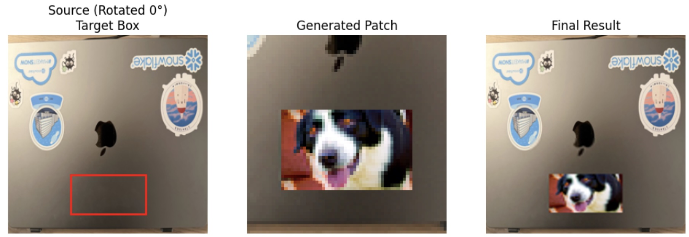laptop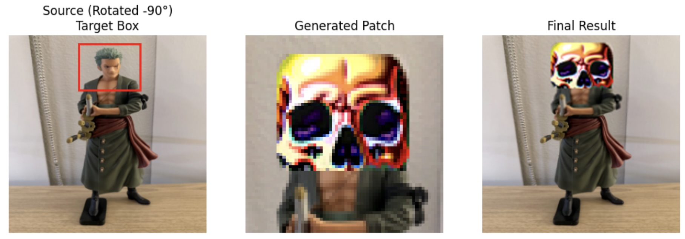toy
1.7.4 Text-Conditional Image-to-Image Translation
Finally, I extended SDEdit to use specific text prompts rather than just "a high quality photo". This allows me to guide the generation process. For example, I first take the Campanile and guide it toward a "pencil". Then I used two of my own images and guided them toward different prompts as shown here.
Campanile -> "Pencil"
Originali=1i=3i=5i=7i=10i=20
Labubu -> Dog
Originali=1i=3i=5i=7i=10i=20
Toy -> Man wearing a hat
Originali=1i=3i=5i=7i=10i=20
1.8 Visual Anagrams
In this section, I implemented Visual Anagrams to create optical illusions: images that look like one thing when upright,
but transform into something completely different when flipped upside down.
The implementation relies on modifying the diffusion process to satisfy two different prompts simultaneously (e.g., "an oil painting of an old man" vs. "an oil painting of people around a campfire").
To achieve this, I implemented the following algorithm at each timestep $t$ of the denoising loop:
Estimate Noise 1 ($\epsilon_1$): I first passed the current noisy image $x_t$ through the UNet using the first prompt (upright).
Estimate Noise 2 ($\epsilon_2$): I flipped the image $x_t$ upside down and passed it through the UNet using the second prompt.
Average the Estimates: To combine these conflicting goals, I flipped $\epsilon_2$ back to the original orientation and averaged it with $\epsilon_1$.
By performing the diffusion step using this averaged noise estimate $\epsilon_{final}$, the image converges into a state that is visually coherent in both orientations.
Results
Below are two generated illusions. For each, I display the image in its original orientation and then flipped 180 degrees to reveal the hidden subject.
Upright: "a photo of a rabbit"Flipped: "a photo of a duck"Upright: "an oil painting of an old man"Flipped: "an oil painting of a snowy mountain village"
1.9 Hybrid Images
In this final section of Part A, I implemented Factorized Diffusion to create Hybrid Images.
Hybrid images are optical illusions that change based on viewing distance: one image dominates the low spatial frequencies
(seen from afar), while another dominates the high spatial frequencies (seen from up close).
To generate these using a diffusion model, I modified the iterative noise estimate step. For every timestep $t$,
I computed two separate noise estimates: $\epsilon_1$ (for Prompt 1) and $\epsilon_2$ (for Prompt 2).
I then combined them using a frequency filter:
I implemented the low-pass filter $f_{low}$ using a Gaussian Blur with a kernel size of 33 and a sigma of 2.
Low Frequencies: Extracted from Prompt 1 by applying the Gaussian blur.
High Frequencies: Extracted from Prompt 2 by taking the original noise estimate and subtracting the blurred version.
By summing these components, the resulting noise estimate $\epsilon_{hybrid}$ guides the diffusion process to create an image containing both subjects simultaneously.
Results
Hybrid 1
Low Freq: "a lithograph of a skull"
High Freq: "a lithograph of waterfalls"
Hybrid 1
Low Freq: "a lithograph of a skull"
High Freq: "a lithograph of waterfalls"
Hybrid 2
Low Freq: "a painting of a rabbit"
High Freq: "a painting of a volcano"
Hybrid 2
Low Freq: "a painting of a rabbit"
High Freq: "a painting of a volcano"
Part 2: Bells & Whistles
For this portion, I extended the capabilities of the diffusion model to support complex geometric transformations and performed style transfer on a logo.
2.1 More Visual Anagrams
The logic of visual anagrams (averaging noise estimates) generalizes to any orthogonal transformation.
I implemented two new transformations: 90° Rotation and Jigsaw Patch Shuffling.
Transformation 1: 90° Rotation
I modified the denoising loop to enforce that the image looks like Prompt A when upright, and Prompt B when rotated 90 degrees.
Implementation: I used torch.rot90 (k=-1) to transform the image during the diffusion step.
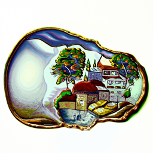
View 1 (Upright) "an oil painting of a village"
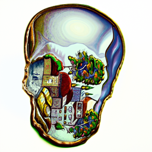
View 2 (Rotated 90°) "a pencil sketch of a skull"
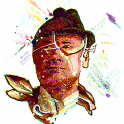
View 1 (Upright) "an photo of a rabbit"
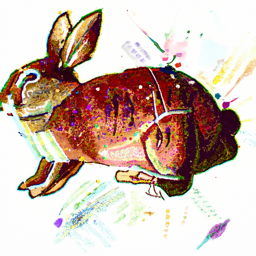
View 2 (Rotated 90°) "a man wearing a hat"
Transformation 2: Jigsaw Puzzles
I implemented a transformation that shuffles the image into random 16x16 patches. The model generates an image that looks like
Prompt A in its ordered form, but rearranges into Prompt B when the patches are shuffled according to a fixed permutation.
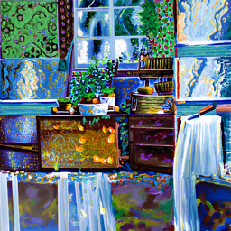
View 1 (Ordered) "an oil painting of a kitchen"
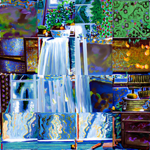
View 2 (Rearranged) "a photo of a waterfall"
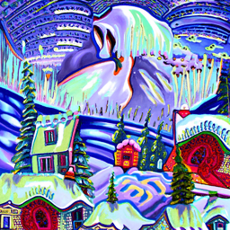
View 1 (Ordered) "an oil painting of a snowy mountain village"
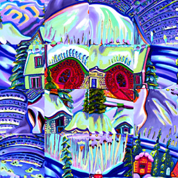
View 2 (Rearranged) "an oil painting of a skull"
2.2 Course Logo Design
I used SDEdit (Text-Conditioned Image-to-Image Translation) to redesign a logo.
By adding noise to the original UCB logo and guiding the denoising process with the prompt
"an oil painting of a bear", I created a stylized version of the logo that retains the original structure
but adopts the artistic style of the prompt.
Original LogoGenerated (64x64)
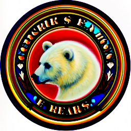
Upsampled Result
Part B — Flow Matching from Scratch
In Part B, I train a flow matching model from scratch using the MNIST dataset. I first
implement a single-step denoising UNet and train it to map a noisy digit back to
a clean digit.
Then I create the flow matching, where the UNet learns a time-dependent velocity field and class conditioning that
transports samples from a simple noise distribution to the data distribution via ODE integration.
B1. Train a Single-Step Denoising UNet
B1.1 Implementing the UNet
In this part, I implemented the denoiser as a UNet. The architecture consists of downsampling and upsampling blocks with skip connections, allowing the network to retain high-frequency details while processing semantic information at lower resolutions.
The Architecture
The Unconditional UNet (Figure 1) takes a 1-channel image (MNIST digit) and outputs a 1-channel image (denoised result). It uses composed operations (Figure 2) to build deeper blocks without losing spatial resolution unnecessarily.
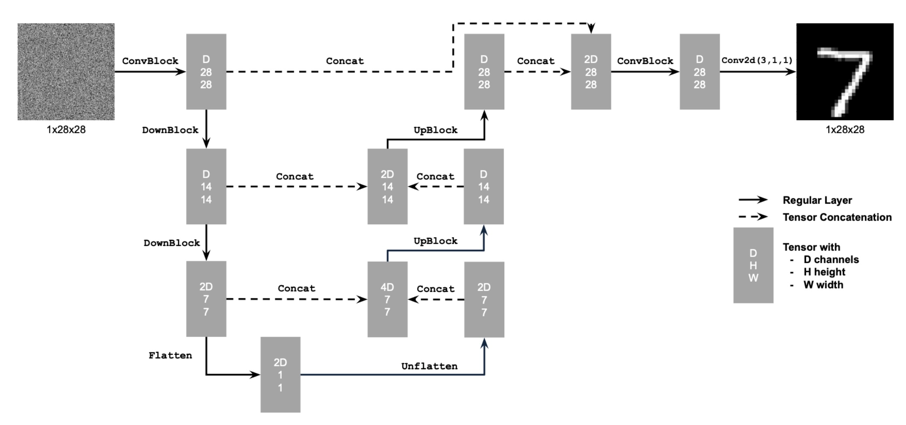
Figure 1: Unconditional UNet ArchitectureFigure 2: Standard UNet Operations
Code Implementation
I implemented the atomic blocks (Conv, DownConv, UpConv, Flatten, Unflatten) and composed them into the full UnconditionalUNet class. A few examples of the atomic blocks are shown below:
This section train the UNet to act as a denoiser $D_\theta$. Given a noisy image $z$,
the model recovers the original clean image $x$.
The Objective
I optimize the network parameters $\theta$ by minimizing the L2 loss between the predicted image and the ground truth:
$$ \mathcal{L} = \| D_\theta(z) - x \|^2 $$
The Noising Process
To generate training data pairs $(z, x)$, I corrupt clean MNIST digits on the fly by adding Gaussian noise:
$$ z = x + \sigma \epsilon, \quad \text{where } \epsilon \sim \mathcal{N}(0, I) $$
Below is a visualization of this noising process across varying noise levels ($\sigma$).
As $\sigma$ increases, the original digit becomes increasingly indistinguishable from the background noise.
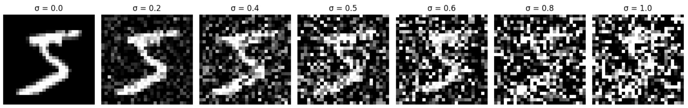
Varying Noise Levels ($\sigma$): Ranging from 0.0 (clean) to 1.0 (pure noise).
Note that at $\sigma=1.0$, the digit is almost entirely obscured.
1.2.1 Training the Denoiser
I trained the UNet to denoise images corrupted with $\sigma=0.5$ Gaussian noise.
Dataset: MNIST (Training Set)
Batch Size: 256
Hidden Dimension: 128
Optimizer: Adam (lr=1e-4)
Epochs: 5
Training Loss
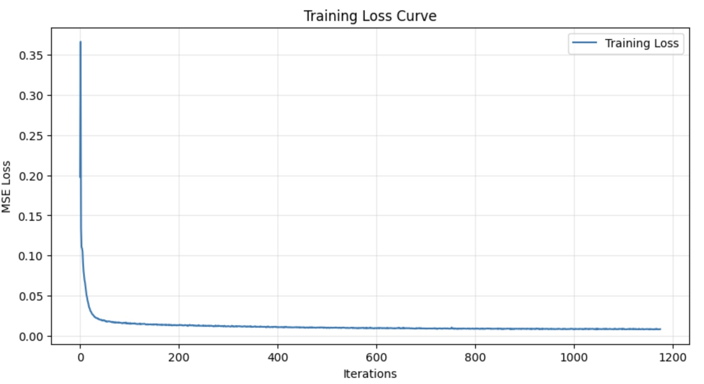
Training Loss over 5 Epochs
Results on Test Set
Below are the denoising results on the unseen test set. Even after just 1 epoch, the model begins to recover digits.
By epoch 5, the reconstructions are sharp and clear.
Epoch 1 Results
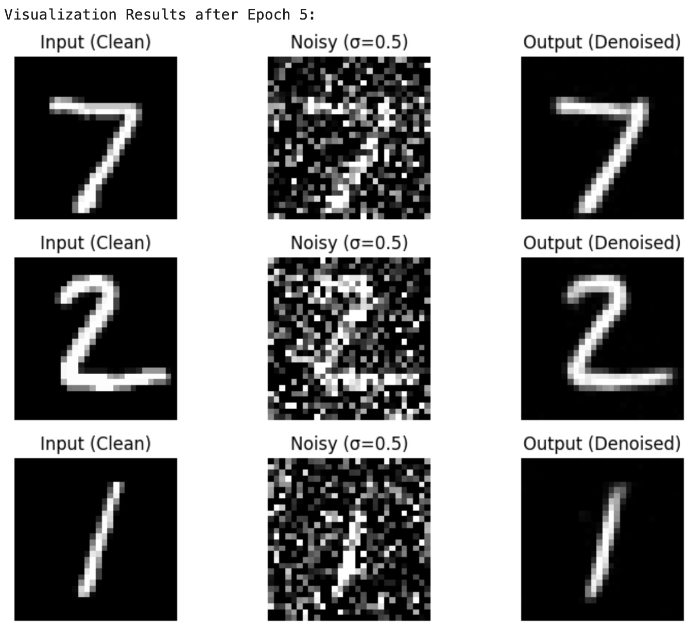
Epoch 5 Results
1.2.2 Out-of-Distribution Testing
The model was trained strictly on noise level $\sigma=0.5$. Here, I tested its generalization by feeding it images with
noise levels it was not trained on, ranging from $\sigma=0.0$ (clean) to $\sigma=1.0$ (very noisy).
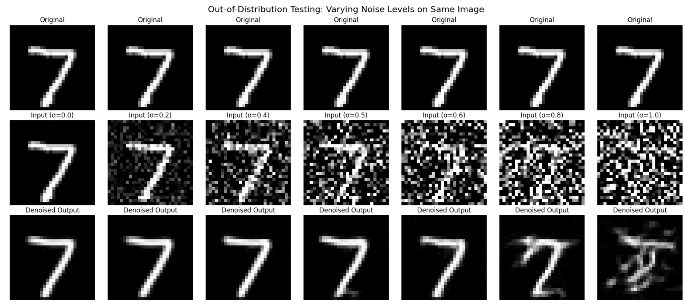
Denoising performance on varying $\sigma$.
Top Row: Input (Noisy) | Bottom Row: Output (Denoised)
Observation: The model performs well when $\sigma$ is less than 0.5. However, at $\sigma$ near 1.0, it struggles to identify the structure, often hallucinating incorrect digits or failing to remove the noise entirely.
1.2.3 Denoising Pure Noise
I attempted to train the denoiser to map
Pure Noise ($\sigma \to \infty$) directly to clean MNIST digits.
The generated images do not look like specific digits. Instead, they resemble a blurry, generic blob that looks like
a mix of all digits overlaid on top of each other.
Reason: This happens because the problem is ill-posed. We are training the model to minimize the
Mean Squared Error (MSE) loss. Mathematically, the optimal solution that minimizes MSE for a given input
is the conditional expectation (the mean) of the possible targets. So the image the model produces is effectively the average of all digits in the dataset.
Part 2. Training a Flow Matching Model
2.1 Adding Time Conditioning to UNet
One-step denoising can clean a digit if some signal remains, but it cannot generate from pure noise.
Flow matching fixes this by learning a continuous-time transport from noise to data.
I implement a time-conditioned UNet that takes (xt, t) as input and predicts a
velocity field. I inject time information using an MLP/FCBlock that
maps the scalar t ∈ [0, 1] into a feature embedding that conditions the UNet blocks.
2.2 Training the UNet (Flow Matching Objective)
For each batch of clean digits x1, I sample a noise image
x0 ~ N(0, I) and a random time t ~ Uniform(0, 1).
I construct the interpolated point
xt = (1 − t) x0 + t x1.
The target velocity for this simple linear path is constant:
vtarget = x1 − x0.
The network predicts vθ(xt, t), and I train with MSE
||vθ − vtarget||22.
Training loss curve for time-conditioned flow matching.
2.3 Sampling from the Time-Conditioned UNet
I train the time-conditioned model with the recommended settings: batch size 64, hidden channels
D = 64, and Adam with an initial learning rate 1e−2
plus an exponential LR decay schedule that drops by 10× over 10 epochs.
To sample, I start from x0 ~ N(0, I) and numerically integrate the learned
velocity field from t = 0 to t = 1 using
num_ts = 50 steps (Euler updates). Each step applies:
x ← x + (Δt) · vθ(x, t).
Over the trajectory, samples gradually sharpen from noise into digit-like structure.
Samples from the time-conditioned model after epoch 1.Samples from the time-conditioned model after epoch 10 (digits become sharper and more coherent).Samples from the time-conditioned model after epoch 10 (digits become sharper and more coherent).
2.4 Adding Class-Conditioning to UNet
Next, I add label information so the model can generate a specific digit class.
In the notebook, I implement ClassConditionalUNet by embedding the digit label
y ∈ {0,…,9} and injecting it (along with the time embedding) into the UNet.
This changes the learned vector field to vθ(xt, t, y).
2.5 Training the UNet (Class Conditioning)
Training mirrors the time-only setup, except the UNet also receives the class label.
I keep the same core hyperparameters (batch size 64, D = 64, Adam) and train for 10 epochs
with exponential LR decay from 1e−2.
During training I periodically sample a grid of digits by fixing labels and sampling different noise seeds.
Training loss curve for the class-conditioned flow-matching model.
2.6 Sampling from the Class-Conditioned UNet + CFG
To strengthen class fidelity at sampling time, I use classifier-free guidance.
The idea is to compute both an unconditional velocity and a conditional velocity, then interpolate:
vguided = vuncond + s · (vcond − vuncond).
In practice, this requires the model to support unconditional behavior, which I implement via
label dropout during training: with some probability I replace y with a special “null”
label so the same network learns both modes.
Class-conditioned samples after epoch 1 (labels start to control coarse shape).Class-conditioned samples after epoch 5 (labels start to control coarse shape).Class-conditioned samples after epoch 10 (stronger class fidelity + sharper strokes).
Bells & Whistles (Part B / CS280A)
B4.1 Training a Class-Conditioned Model without LR Scheduler
As an ablation, I retrain the class-conditioned model using a constant learning rate
(1e−3) and remove the exponential scheduler. This tests whether the scheduler is important
for stability and final sample quality. In my notebook, I compare the loss curve and sample grids at epochs
1, 5, and 10.
I also improved the time-conditioned model by (1) increasing capacity
D: 64 → 128 and (2) training longer (10 → 20 epochs) with a smaller
learning rate (1e−3) for stability. I then generate a larger grid of samples (4×10)
to qualitatively evaluate diversity and sharpness.
Results after the first epoch.Results after the 5th epoch.Results after the 10th epoch.
What I Learned
Single-step denoising is not a generator. When the input contains no information (pure noise),
MSE training encourages regression toward an average digit, motivating iterative generative dynamics.
Flow matching turns generation into learning a vector field. By training a time-conditioned UNet to predict
the velocity along an interpolation path, sampling becomes integrating an ODE from noise to data.
Conditioning matters. Adding class conditioning and CFG can significantly improve class fidelity, but guidance
must be tuned to balance fidelity vs diversity.